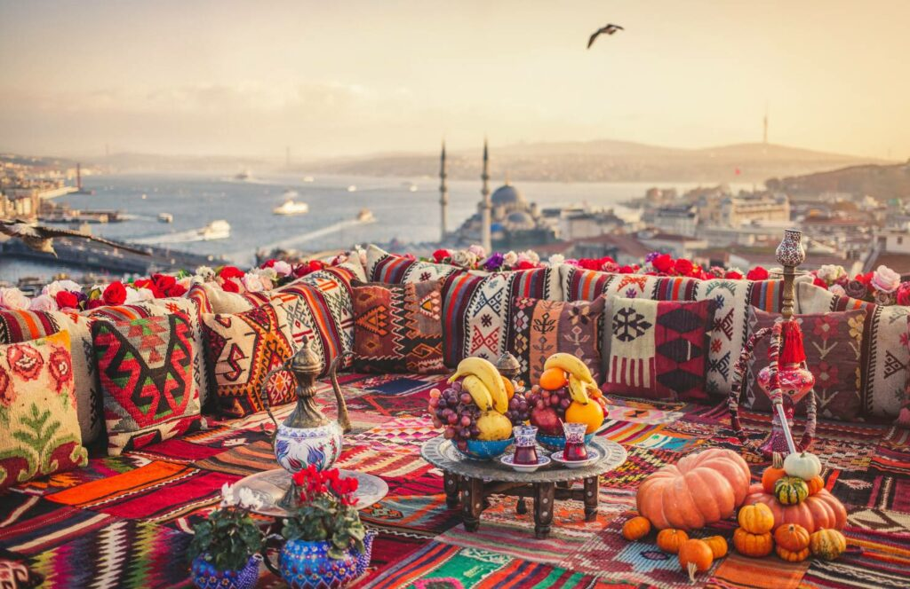

What to Buy
The best souvenir is often something that brings a small part of Istanbul home with you. Here are ideas for different budgets, ages and interests.
What Is Worth Taking Home?
A good Istanbul souvenir does not have to be expensive. The most memorable purchases often connect to something you tasted, saw or learned in the city.
Ideas for Every Traveller
Turkish Coffee
A compact gift with a strong cultural connection. Add a small cup set if you want a complete souvenir.
Tea & Glasses
Turkish tea culture is easy to take home and share.
Lokum
Choose a reputable shop and ask about flavours, freshness and packaging for travel.
Spices
Sumac, pul biber and spice blends make practical gifts for cooks.
Ceramics
Look for handmade pieces and ask how they should be packed for the journey.
Textiles
Towels, throws, scarves and small woven goods can be both useful and memorable.
Jewellery
For higher-value pieces, ask for clear information, receipts and documentation.
Carpets & Kilims
Buy from established sellers and take time to understand material, age and provenance.
Children's Gifts
Small puzzles, illustrated books, traditional games and colourful crafts can be easier to pack than fragile objects.
Where to Buy
Historic bazaars are ideal for variety and atmosphere, while neighbourhood shops can be better when you want something less tourist-oriented. The Spice Bazaar is especially useful for food gifts, while the Grand Bazaar offers a much wider range of crafts and traditional goods.
Before You Pay
- Compare a few shops before buying an expensive item.
- Ask what is included in the price and request a receipt.
- For fragile items, ask how they will be packed for air travel.
- For antiques, valuable carpets or similar goods, check current export rules before purchase.
Explore More of Istanbul
Want to experience Istanbul, not just read about it?
Use this guide to plan your own day, or let our concierge team help with the practical details around it.
Request Concierge →